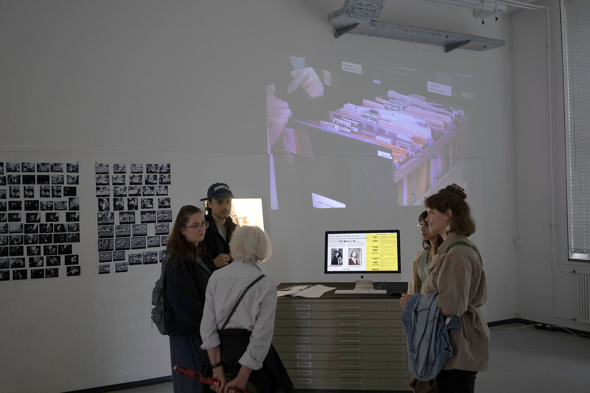
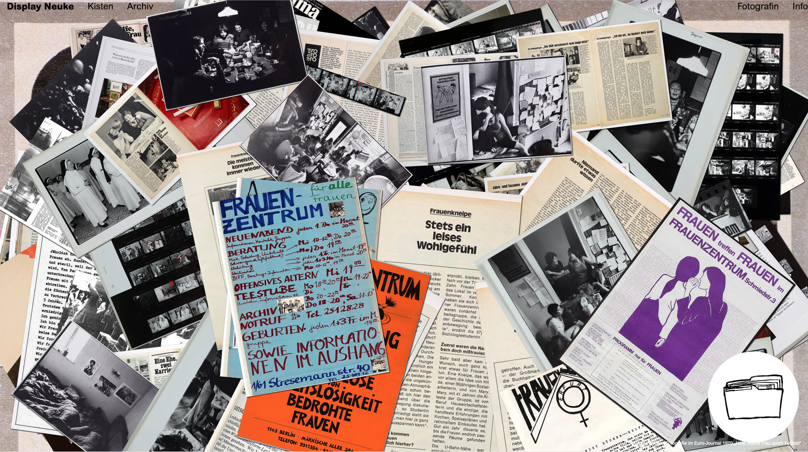
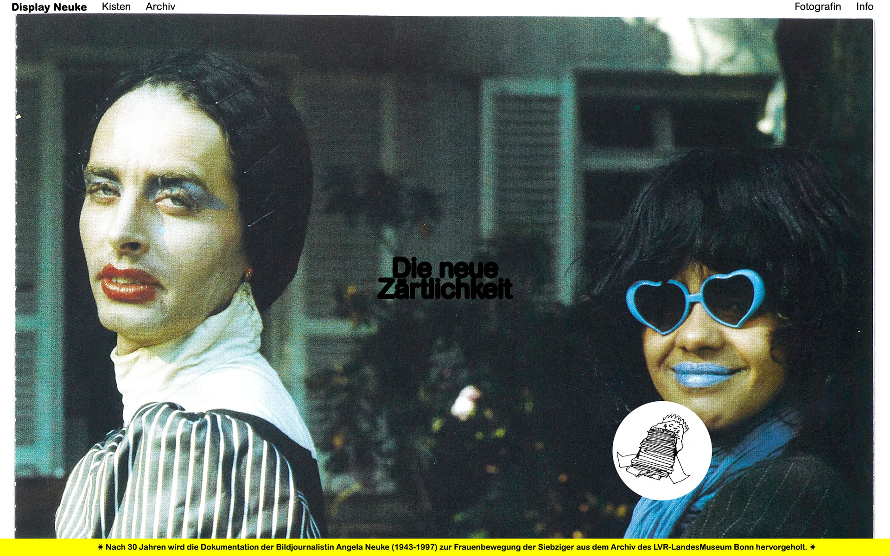
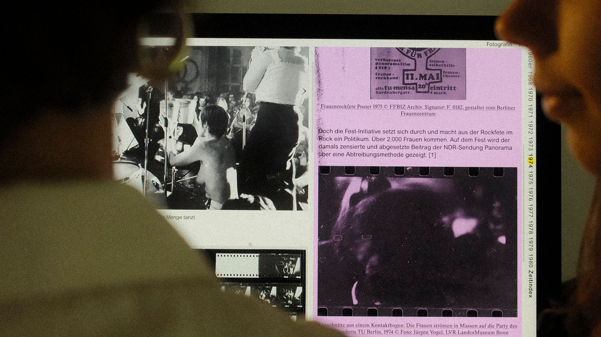

Archives, as repositories of memory, preserve valuable insights into everyday life, cultural traditions, societal identities, work practices, and the evolution of individuals and institutions. The extensive digitisation is transforming these collections, yet the resulting databases are often not user-friendly or widely accessible to diverse audiences.
The website “Display Neuke” makes the previously unpublished estate of German photojournalist Angela Neuke (1943-1997) from the collection of the LVR-LandesMuseum Bonn digitally and interactively accessible. In particular, the project highlights Neuke's documentation of the women's movement of the 1970s in West Germany and encourages reimagining the archive as a dynamic space—one that actively generates, preserves and makes public.
By contextualizing the material, the analogue archive becomes a living place of knowledge transfer. The website was created as part of a bachelor's thesis and is currently still under “lock and key” until the museum opens the doors for the official retrospective of Neuke.



